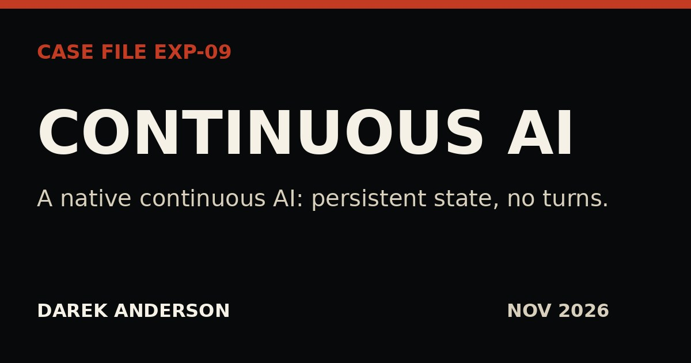

EXP-09
Continuous AI
A new kind of AI that runs continuously instead of in turns: persistent state, streaming perception, and compute that scales with what changed, not with the length of the history. First job: drive a PC screen and finish tasks on it.
IN DEVELOPMENT

BUILT
The design is layered and native, not a wrapper over a turn-based model. Three layers run at different timescales over one persistent state: a fast layer (GLA), and tactical and deliberative layers (Gated DeltaNet) with an exact 1024-token window, a size locked by measurement in the first workstream, not picked by feel. The layers update each other continuously in both directions; there are no text prompts and no request-response turns between them.
Perception starts from a frozen SigLIP2 embedding space, with DINOv2 patches for verification. Training runs on free compute pools (Kaggle GPU, TPU, and CPU sessions) under a standing rule: when a layer stops improving, the work moves to the next layer instead of waiting.
WHAT BROKE
The second workstream (the screen-control layer) has two criteria still failing, both about clicking. The best click run reached 0.718 target success, but early halts regressed from 0.020 to 0.075, so it did not replace the earlier run (0.671 target success, quiet false actions 0.0056). The failure breakdown across 200 episodes: about a third of pauses the model never clicks at all, 430 wrong-element clicks, and 99 clicks while the target was moving. Two pre-agreed fixes were spent without moving the click ceiling.
HOW I JUDGE IT
Every workstream carries criteria written before the build, graded per run, and the bars do not move. Workstream 0: 5 of 5 criteria pass. Workstream 1: complete, with the 1024 window locked by measurement (loads of 32 and up were unrankable, and the window reopens if real-task recall fails at the boundaries). Workstream 2: criteria 1 to 3, 6, and 7 pass; 4 and 5 fail and are reported as failing.
Darek’s own line for this section is not written yet. The graded record above is what exists until it is.
RESULTS
In development. The first real task for the screen-control layer is modeling an object in Blender. One longer training run at the larger model size is the last lever for workstream 2; after it, the build moves to the next layer either way, and the earlier layers get improved later.